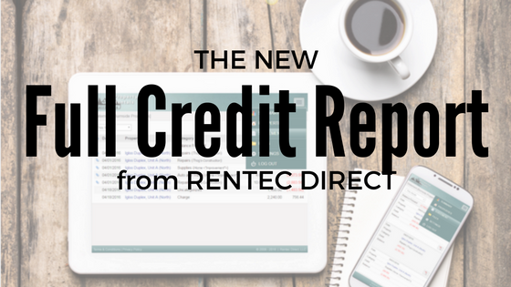

Get Your Free Credit Reports | Credit Karma
- Get Your Free Credit Reports | Credit Karma
Accessing your credit report is an important part of managing your credit health through the COVID-19 outbreak. TransUnion is pleased to offer you free weekly credit reports online through April 2021 as part of our commitment to supporting all Americans during this difficult time.Get your free report now at annualcreditreport.com. - Check Your FREE Credit Score & Report. Totally Free ...
Full credit report. We make it easy to understand all the info in your credit file, so you know where you stand. Six years’ analysis. ... Based on a survey of 958 TotallyMoney credit report customers . Stay one step ahead. Live credit score. We show your most recent credit score happenings, so you can track changes in real time. - What's On My Full Credit Report? | Credit.com
Check your TransUnion credit report with Credit Karma. Full credit report services? Remember. Be aware that repeatedly applying for credit can harm your chances of getting credit, because lots of credit searches might indicate you’re having problems. You can apply for your credit record as often as you like though. - freecreditreport.com: No Credit Card Needed.
Free Credit Score: Check your Credit Report Online. Lenders (like credit card issuers) use credit score scores to assist predict danger, and their opinions are those that matter most in the end. Like every credit card utility, different elements can have an effect on your approval resolution. - Free Credit Score: Check your Credit Report Online
A credit report can help when buying a house or car. Learn more about when, why and how you should get a free credit report. Personal. Products & Services. Equifax Premium Products. Get peace of mind when you choose from our comprehensive 3-bureau credit monitoring and identity theft protection plans. - How to check your credit report - Money Advice Service
Credit Report 101 From the latest information on Credit Reports, Identity Theft, to videos and credit calculators, our blog is an excellent resource for helping you navigate "all things credit." Infographic: Reading a Credit Report - Free Credit Report - Experian
What Is The Highest Credit Score Possible. The pattern credit report additionally incorporates definitions of some difficult terminology found in the report. Experian, Transunion and Equifax every has its own websites, where it would give you a free credit report for 30 days. That is the only web site to get your free credit report. - Get a Free Credit Report | Equifax®
Once your Multi-Agency Credit Report has been generated, click the ‘Download Printable Report’ link, found at the bottom of your Credit Report. If this option doesn’t show for any reason please get in touch via email, secure message through your account, or call us free on 0800 086 9360 and we will assist you further. - Annual Credit Report.com - Home Page
How to get your Annual Credit Report from Experian. Under federal law you are entitled to a copy of your credit report annually from all three credit reporting agencies - Experian, Equifax ® and TransUnion ® - once every 12 months. To get your Experian annual credit report online, and by phone or mail, visit www.AnnualCreditReport.com. - Free Credit Reports | FTC Consumer Information
It can be helpful to think of a credit score as a letter grade you get in school, while a credit report is like a listing of all the homework, tests and quizzes that go into earning that grade. Credit Karma offers free credit reports and free credit scores from Equifax and TransUnion, two of the three major consumer credit bureaus. Speaking of ...
Credit Karma Menu Login Sign up for free
Getting your free credit reports.
It’s not like the fake free, but the real 100% free, free. Get your free reports
Here’s how reporting works:
We’ll help you along your financial journey –– one step at a time.
Two is better than one
See your TransUnion ® and Equifax ® credit reports anytime.
Building credit
Learn how to achieve your financial goals with our free tips and tools.
Stay up to date
Get notified when there are important changes to your credit reports.
Get the right tools
Choose from credit card and loan options that could work best for your financial needs.
Editorial Note: Credit Karma receives compensation from third-party advertisers, but that doesn’t affect our editors’ opinions. Our marketing partners don’t review, approve or endorse our editorial content. Availability of products, features and discounts may vary by state or territory. It’s accurate to the best of our knowledge when posted. Read our Editorial Guidelines to learn more about our team.
How to read and understand your free credit reports
Updated August 15, 2020
This date indicates our editors’ last comprehensive review and may not reflect recent changes in individual terms.
Written by: Tim Devaney
If you’re looking for your free credit reports, you’ve come to the right place. Credit Karma offers free credit reports from two of the three major consumer credit bureaus, Equifax and TransUnion.
But if you’ve never seen your credit reports before, you might not understand what you’re looking at. Let’s review what you might find on your credit reports and how that information can impact your credit scores and overall financial health.
What’s on my credit reports? Credit reports vs. credit scores: What’s the difference? What are the three main consumer credit bureaus? How can I find and dispute errors on my credit reports? What is the Fair Credit Reporting Act? Where can I get a free credit report? Free-credit-report FAQs
What’s on my credit reports?
Your credit reports contain personal information, as well as a record of your overall credit history . Lenders and creditors report account information, such as your payment history, credit inquiries and credit account balances, to the three main consumer credit bureaus. All of that information can make its way into your credit reports.
Much of what’s found in your credit reports can impact whether you’re approved for a credit card, mortgage, auto loan or other type of loan, along with the rates you’ll get. Even landlords may look at your credit when deciding whether to rent to you.
Let’s dig into some of the main components of your credit reports.
Personal Information
The personal information you might find on your credit reports includes your name, address, date of birth, Social Security number and any jobs you’ve held.
The credit bureaus use this “personally identifiable information” to ensure you’re really you, but it doesn’t factor into your credit scores. In fact, federal law prohibits credit scores from factoring in personal information such as your race, color, gender, religion, marital status or national origin.
That being said, it’s not necessarily true that the American financial system is unbiased — or that credit lending and credit scoring systems don’t consider factors affected by bias. To learn more about racial justice in lending and initiatives seeking to create change, connect with organizations leading the fight, like the ACLU .
Credit account information
Most of the information on your credit reports focuses on your credit accounts. Lenders typically report on each account you’ve opened with them, so you can expect to see information about any credit cards, auto loans, mortgages or other types of loans you’ve opened.
And there can be quite a lot of information associated with each credit account. This may include your payment history, your loan amount or credit limit, your current account balance and the age of the account.
These account details are all factors that affect your credit scores , so they can have a big impact on your credit health and financial picture.
Credit inquiries
There are two types of credit inquiries that might show up on your credit reports: hard credit inquiries and soft credit inquiries .
A hard inquiry (also known as a “hard pull” or “hard credit check”) typically occurs when you apply for credit. This happens because a lender or credit card issuer checks your credit as part of their loan decision, and you typically have to authorize them to do so.
A single hard inquiry might only have a small impact on your credit scores, but a swarm of new inquiries in a short period of time could make you appear risky to potential lenders. In some cases, multiple hard credit inquiries are treated as a single inquiry, say, when you’re shopping around for an auto or home loan within a short period of time.
A soft inquiry (also known as a “soft pull” or “soft credit check”) may or may not show up on your credit reports, depending on the bureau. These typically occur when you check your own credit, or when a person or company checks your credit as part of a background check or prequalification. Unlike hard inquiries, soft inquiries do not affect your credit scores.
Public Records
Your credit reports may also contain derogatory marks associated with past financial bumps in the road. These derogatory marks could include bankruptcies , late payments , and delinquent accounts that have been sent to collections .
These public records can cause long-term damage to your credit scores, so it’s important to understand how to deal with derogatory marks .
Credit reports vs. credit scores: What’s the difference?
Each credit report has a credit score associated with it (though one isn’t necessarily provided to you with the other). This is a three-digit number based on the information in your report.
Most credit scores range from 300 to 850. Where your score falls in this range can determine how likely you are to be approved for a loan, and whether you’ll qualify for the best rates and terms.
It can be helpful to think of a credit score as a letter grade you get in school, while a credit report is like a listing of all the homework, tests and quizzes that go into earning that grade.
Credit Karma offers free credit reports and free credit scores from Equifax and TransUnion, two of the three major consumer credit bureaus. Speaking of which …
What are the three main consumer credit bureaus?
The three main consumer credit bureaus are Equifax, Experian and TransUnion. A credit bureau is a company that collects and stores information about you and your financial accounts and history, and then uses this information to create your credit reports and credit scores.
How credit bureaus get your information
Lenders may send information about your credit accounts to one or several of the credit bureaus. The credit bureaus may also collect information about certain derogatory marks from court records. All of this information is then compiled and used to generate your credit reports.
Why you could have different credit reports from different bureaus
The credit bureaus can only report on the information that’s provided to them. Since lenders are not required to report to all three major credit bureaus, you might find information about certain accounts on one credit report, but not others.
Even when lenders do report information to all three major bureaus, they may report that information at different times. Given all the credit information included in a typical credit report, it’s perfectly normal to observe some minor differences between your credit reports.
Mistakes do happen from time to time. If you think your credit reports are different due to legitimate errors, you can dispute those errors with each credit bureau.
How can I find and dispute errors on my credit reports?
If you notice any big discrepancies between your credit reports, there might be an error. There are a number of ways to find and dispute these errors . Let’s take a look at a few.
Free credit monitoring from Credit Karma
Credit Karma’s free credit monitoring tool can help you stay on top of your credit and catch any errors that might impact your scores.
If we notice any important changes on your Equifax or TransUnion credit report, we’ll send an alert so you can review the changes for suspicious activity. If you don’t recognize the information and think it might be associated with an error or identity theft, you can file a dispute.
How to dispute errors on your Equifax credit report
If you spot an error on your Equifax credit report, you’ll have to file your dispute directly with Equifax.
Start by reviewing your free report from Equifax on Credit Karma. If you come across an error, scroll down to the bottom of the account in question and click “Go to Equifax.” You’ll have a chance to review your dispute before submitting it to Equifax.
How to dispute errors on your TransUnion credit report with Credit Karma’s Direct Dispute™ feature
Credit Karma’s Direct Dispute™ tool makes it easy to file a dispute directly with TransUnion. If you come across an error on your TransUnion report, you can submit a dispute without leaving Credit Karma.
Just scroll to the bottom of the account where you found the mistake and click the box labeled “Dispute an Error.” You’ll be asked to verify some information before clicking “Review and Submit.”
You can generally expect TransUnion to review your claim within 30 days. But keep in mind that it may take a little longer for the changes to show up on your credit reports.
Where can I get a free credit report?
Credit Karma partners with Equifax and TransUnion to provide free credit reports from those two bureaus. Your reports can be updated weekly, and you can check them as often as you like with no impact on your credit scores.
Under the Fair Credit Reporting Act, you are also entitled to a free annual credit report each year from each of the three major consumer credit bureaus. To request a free copy of your credit reports from Equifax, Experian and TransUnion, visit the official site, annualcreditreport.com.
What is the Fair Credit Reporting Act, or FCRA?
The Fair Credit Reporting Act is an important law that gives you the right to know the information that the credit bureaus keep on you and how that information informs your credit scores.
This law includes a number of consumer rights and protections. For example, under the FCRA you have the right to dispute incomplete or inaccurate information on your credit reports. In most cases, the credit bureau must investigate your case and correct or remove any inaccuracies within 30 days.
Free-credit-report FAQs
Does checking my free credit reports hurt my credit?
No, checking your free credit reports on Credit Karma will not hurt your credit. This is considered a soft inquiry.
Are Credit Karma’s free credit reports accurate?
The credit reports you see on Credit Karma come directly from Equifax and TransUnion and should reflect any information reported by those credit bureaus. If you spot an error on either of those credit reports, Credit Karma can help you dispute it .
Which credit report is most accurate?
No one credit report is innately more accurate than the others. Your TransUnion credit report might contain information that your Equifax credit report doesn’t, or vice versa.
This is partly because lenders are not required to report your information to all three credit bureaus. In some cases, they may only report to one bureau and not the others, or they may report information at different times.
In any case, it’s a good idea to review your credit reports on a regular basis so that you can be sure any discrepancies are minor.
Ready to help your credit go the distance? Log in or create an account to get started.
Get your free reports Facebook Twitter Instagram Company Info About Credit Karma Careers Engineering Blog Help Center In The News Security Practices Privacy Policy Terms of Service Popular Offers Best Credit Cards Credit Cards for Limited Credit Credit Cards for Poor Credit Credit Cards for Good Credit Personal Loans Auto Insurance Credit Resources Credit and Finance Articles Credit Card Reviews Financial Calculators Credit Karma Blog Notable Links Free Credit Report Free Credit Score Free Credit Monitoring Credit Scores Credit History What is a Good Credit Score? Quick Tips for Your Credit Health © 2007–2020 Credit Karma, Inc. Credit Karma® is a registered trademark of Credit Karma, Inc. All Rights Reserved. Product name, logo, brands, and other trademarks featured or referred to within Credit Karma are the property of their respective trademark holders. This site may be compensated through third party advertisers. Credit Karma Mortgage, Inc. NMLS ID# 1588622 | Licenses | NMLS Consumer Access Credit Karma Offers, Inc. NMLS ID# 1628077 | Licenses | NMLS Consumer Access California loans arranged pursuant to Dep't of Business Oversight Finance Lenders License #60DBO-78868. Auto, homeowners, and renters insurance services offered through Credit Karma Insurance Services, LLC (dba Karma Insurance Services, LLC; CA resident license #0172748). Only mortgage activity by Credit Karma Mortgage, Inc., dba Credit Karma is licensed by the State of New York. Credit Karma, Inc. and Credit Karma Offers, Inc. are not registered by the NYS Department of Financial Services. iPhone is a trademark of Apple Inc., registered in the U.S. and other countries. App Store is a service mark of Apple Inc. Android is a trademark of Google Inc. The Equifax logo is a registered trademark owned by Equifax in the United States and other countries. Credit Karma is committed to ensuring digital accessibility for people with disabilities. We are continually improving the user experience for everyone, and applying the relevant accessibility guidelines. Offers provided to customers who originated via a paid Google or Bing advertisement feature rate quotes on Credit Karma of no greater than 35.99% APR with terms from 61 days to 180 months. Your actual rate depends upon credit score, loan amount, loan term, and credit usage and history, and will be agreed upon between you and the lender. For example, you could receive a loan of $6,000 with an interest rate of 7.99% and a 5.00% origination fee of $300 for an APR of 11.51%. In this example, you will receive $5,700 and will make 36 monthly payments of $187.99. The total amount repayable will be $6,767.64. Your APR will be determined based on your credit at the time of application. CREDIT KARMA OFFERS, INC. 760 Market St. Fl. 2 San Francisco, CA 94102 Credit Karma Offers, Inc. NMLS ID# 1628077 | Licenses | NMLS Consumer Access

Mauris vulputate dolor
Rutrum fermentum nibh in augue praesent urna congue rutrum.
Etiam posuere